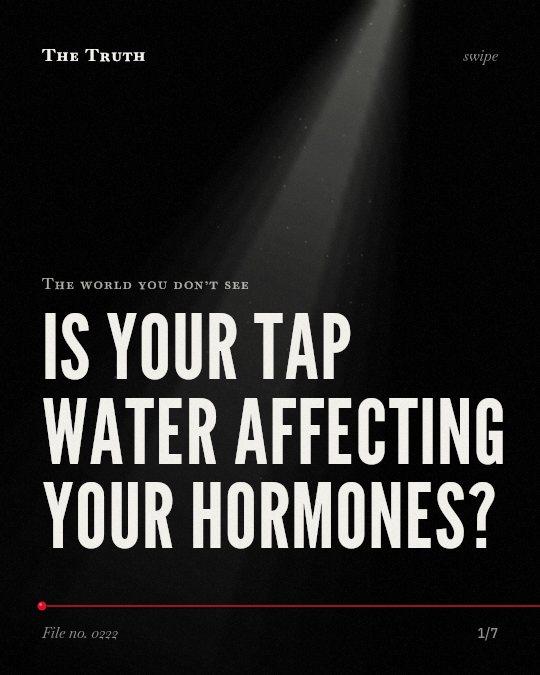

The world you don’t see
Is your tap water affecting your hormones?

Millions of people drink water containing endocrine disruptors.
Drinking water for 6 million u.s. residents exceeds health advisories for pfos and pfoa. These substances are linked to endocrine and reproductive health risks.
Supported. At least one solid peer-reviewed study. The evidence is mixed.
What the research found
To date, only in a few cases PhACs have also been detected at trace-levels in drinking water samples.
“To date, only in a few cases PhACs have also been detected at trace-levels in drinking water samples.”
Review, 2002. Heberer, Toxicology letters.
Drinking water supplies for 6 million U. S. residents exceed US EPA's lifetime health advisory (70 ng/L) for PFOS and PFOA.
“We find drinking water supplies for 6 million U. S. residents exceed US EPA's lifetime health advisory (70 ng/L) for PFOS and PFOA.”
Study, 2016. Hu et al., Environmental science & technology letters.
Several PFAS have been identified as endocrine-disrupting chemicals based on their ability to interfere with normal reproductive function and hormonal signalling.
“Several PFAS have been identified as endocrine-disrupting chemicals based on their ability to interfere with normal reproductive function and hormonal signalling.”
Experiment, 2020. Ding et al., Human Reproduction Update.
Drinking water contamination with poly- and perfluoroalkyl substances (PFASs) poses risks to the developmental, immune, metabolic, and endocrine health of consumers.
“Drinking water contamination with poly- and perfluoroalkyl substances (PFASs) poses risks to the developmental, immune, metabolic, and endocrine health of consumers.”
Study, 2016. Hu et al., Environmental science & technology letters.
Per- and poly-fluoroalkyl substances (PFAS) are widespread environmental contaminants frequently detected in drinking water supplies worldwide that have been linked to a variety of adverse reproductive health outcomes in women.
“Per- and poly-fluoroalkyl substances (PFAS) are widespread environmental contaminants frequently detected in drinking water supplies worldwide that have been linked to a variety of adverse reproductive health outcomes in women.”
Review, 2021. Rickard et al., Toxicology.
PhACs and some other polar compounds were detected at concentrations up to the microg/L-level in all compartments of the Berlin water cycle.
“In the course of the monitoring program, PhACs and some other polar compounds were detected at concentrations up to the microg/L-level in all compartments of the Berlin water cycle.”
Experiment, 2002. Heberer et al., Water Science & Technology.
The chemicals are widespread.
Per- and poly-fluoroalkyl substances are found in water supplies worldwide. They interfere with normal reproductive function and hormonal signaling. However, pharmaceutical residues are only detected in a few cases.
The unseen influence on your body.
These chemicals are part of your daily environment. That may be why your internal hormonal signaling is affected by sources you cannot see or taste.
This part is our reading of the evidence, not a finding.
A glass of water.
You pour a glass of water from the tap in your kitchen. It looks clear. It tastes neutral. It is part of your daily routine.
The honest summary
The evidence confirms that PFAS are widespread in drinking water and linked to endocrine and reproductive issues, but the presence of pharmaceuticals in drinking water is much less common.
The research notes that the specific mechanisms of action for PFAS in the female reproductive and endocrine systems are not yet evident.
What is in your water?
Sources
- Th. Heberer, Kirsten Reddersen, Andy Mechlinski (2002). From municipal sewage to drinking water: fate and removal of pharmaceutical residues in the aquatic environment in urban areas. Water Science & Technology. Experiment, cited 397 times.
- Ning Ding, Sioḃán D. Harlow, John F. Randolph et al. (2020). Perfluoroalkyl and polyfluoroalkyl substances (PFAS) and their effects on the ovary. Human Reproduction Update. Experiment, cited 407 times.
- Brittany P. Rickard, Imran Rizvi, Suzanne E. Fenton (2021). Per- and poly-fluoroalkyl substances (PFAS) and female reproductive outcomes: PFAS elimination, endocrine-mediated effects, and disease. Toxicology. Review, cited 336 times.
- Heberer T (2002). Occurrence, fate, and removal of pharmaceutical residues in the aquatic environment: a review of recent research data. Toxicology letters. Review, cited 1,284 times.
- Hu XC, Andrews DQ, Lindstrom AB, Bruton TA, Schaider LA, Grandjean P, Lohmann R, Carignan CC, Blum A, Balan SA, Higgins CP, Sunderland EM (2016). Detection of Poly- and Perfluoroalkyl Substances (PFASs) in U.S. Drinking Water Linked to Industrial Sites, Military Fire Training Areas, and Wastewater Treatment Plants. Environmental science & technology letters. Study, cited 805 times.
Also read for this file, not quoted
This file was researched and drafted by software, then checked by rules a model cannot talk its way around: each quote above was matched word for word against the paper, and every number had to appear in it. How files are made.